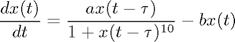
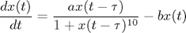

makeyglass_eq
This function returns dx/dt of Mackey-Glass delayed differential equation

Matlab code:
function x_dot = mackeyglass_eq(x_t, x_t_minus_tau, a, b) x_dot = -b*x_t + a*x_t_minus_tau/(1 + x_t_minus_tau^10.0); end
This function returns dx/dt of Mackey-Glass delayed differential equation

Matlab code:
function x_dot = mackeyglass_eq(x_t, x_t_minus_tau, a, b) x_dot = -b*x_t + a*x_t_minus_tau/(1 + x_t_minus_tau^10.0); end